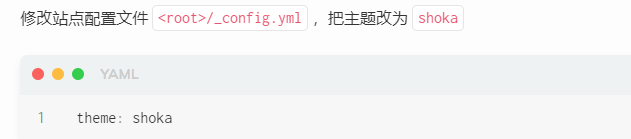

这里主要记录了在 windows 环境下用 Github 和 hexo 搭建自己的网站，以及网站的主题配置。鉴于自己以往跟着网上教程安装搭建各种软件环境，从未顺利的从头走到尾，特此记录，防止以后再踩坑。在此，特别鸣谢 NCH 大佬在我搭建网站过程给予的帮助。
# ☁️ 1. 安装
# 🍀 a. 看教程
这里主要参考了 Hexo+github 搭建个人博客（2022 年 7 月）,hexo 史上最全搭建教程，Hexo - 零基础搭建个人博客 (详解)。这三篇内容大同小异，可以主要看第一个。
这里增加一个 nodejs 安装教程，对新手小白来说很友好。
# 🍀 b. 查错误
根据上面的教程，仍然在最后一步部署 blog 到 github 上出错（ hexo d ）失败，在排查时未找到原因，按照以下步骤做了一遍：
（1）再重新配置一遍（因为自己电脑之前已经有了 git，所以在第一遍的时候没有安装，再第二次的时候按照教程把它安装了，并出现了 git bash）
（2）重新定义了全局 git 账户和邮箱
$ git config --global user.name <yourname> | |
$ git config --global user.email <youremail> |
<> 分别是自己 github 账号的用户名和邮箱，输入的时候 <> 不用打出来，可用以下命令查看是否输对
$ git config user.name | |
$ git config user.email |
然后创建 SSH
$ ssh-keygen -t rsa -C <youremail> |
之后一路回车，最后在 C:\Users\zhang\ .ssh 目录下生成 id_rsa.pub 文件。而后在 GitHub 的 setting 中，找到 SSH keys 的设置选项，点击 New SSH key 。把你的 id_rsa.pub 里面的信息复制进去（这里主要参考 hexo 史上最全搭建教程）
ssh，简单来讲，就是一个秘钥，其中， id_rsa 是你这台电脑的 私人秘钥 ，不能给别人看的， id_rsa.pub 是 公共秘钥 ，可以随便给别人看。把这个公钥放在 GitHub 上，这样当你链接 GitHub 自己的账户时，它就会根据公钥匹配你的私钥，当能够相互匹配时，才能够顺利的通过 git 上传你的文件到 GitHub 上。
（3）配置_config.yml 站点文件
三个参考教程在最后一步写_config.yml 文件时对 repository 用的都是 https 形式，但改成 git 形式后 deploy d 就成功了（第一个命令改成第二个命令）
$ # Deployment | |
$ ## Docs: https://hexo.io/docs/one-command-deployment | |
$ deploy: | |
$ type: git | |
$ repository: https://github.com/<yourgithubname>/<yourreponame>.github.io.git | |
$ branch: main |
$ # Deployment | |
$ ## Docs: https://hexo.io/docs/one-command-deployment | |
$ deploy: | |
$ type: git | |
$ repository: git@github.com:<yourgithubname>/<yourreponame>.github.io.git | |
$ branch: main |
这里主要参考了设置 SSH 使用 hexo-deploy 时免输用户名密码，但实际上在重新配置之前就已经修改过这个命令了，但失败了（不清楚为啥重来一次后就成功）
# 🍀 c.reference
(1) Hexo+github 搭建个人博客（2022 年 7 月）
(2) hexo 史上最全搭建教程
(3) Hexo - 零基础搭建个人博客 (详解)
(4) 设置 SSH 使用 hexo-deploy 时免输用户名密码
(5) nodejs 安装教程
# ☁️ 2. 主题设置
# 🍀 a. 安装
主题设置主要参考了 Ruri Shimotsuki @優萌初華开发的 shoka 主题。Hexo 主题 Shoka & multi-markdown-it 渲染器使用说明详细介绍了主题和页面显示的配置，本文的配置均是基于此。
下载完后发现在 D:/hexo/blog/themes/ 下出现了 shoka 文件夹，把文件夹里（ D:/hexo/blog/themes/shoka/ ）的 _config.yml 复制一份（里面是主题配置的所有参数）到根目录下（ D:/hexo/blog/ ）（blog 里存放着自己网站的所有配置文件和自己想要上传到网上的内容 md 文件，所以是根目录），并命名为 _config.shoka.yml ，方便主题升级（先不对文件修改）。根目录下本身已经有一个_config.yml，是站点配置文件。（内容说明来自主题配置建议）。
完成后，根目录下应该有两个 yml 文件： _config.yml （站点配置文件）和 _config.shoka.yml （主题配置文件）。主题配置文件各个参数的含义及如何修改参考主题的基础配置
注意，在这一步需要安装一个字数及阅读时间统计插件： hexo-symbols-count-time
$ npm install hexo-symbols-count-time -save |
# 🍀 b. 安装依赖插件
完成 shoka 主题下载和主题配置文件复制和重命名修改后，先安装插件插件安装与配置教程戳此
根据 shoka 主题的要求，安装 hexo-renderer-multi-markdown-it 和 hexo-autoprefixer 插件，注意作者只给了安装第一个插件的例子，另一个还需要自己安装（安装 multi-markdown-it 前需要卸载默认的 hexo-render-marked ）
$ npm un hexo-renderer-marked --save | |
$ npm i hexo-renderer-multi-markdown-it –save | |
$ npm install hexo-autoprefixer –save |
# 🍀 c. 修改主题配置
安装完两个插件后，把配置里关于 makedown ， minify ， autoprefixer ， algolia 的代码均复制到根目录下 _config.shoka,yml 文件里（feed 配置代码没有复制）。
此外，需要注意的是停用代码高亮功能这一步骤，下面的命令不在根目录_congif.shoka.yml，而在 _config.yml 文件里，完成后保存即可。
# 🍀 d. 修改站点配置文件
修改根目录下站点配置文件_config.yml，把主题改为 shoka

# 🍀 e. 其它主题配置设置
# (a) 网址标题设置
_config.yml 的 title 和_config.shoka.yml 的 alternate 命令都可以控制网址标题，若用如下命令，则会出现下图情况
$ alternate: Yue Shoka | |
$ title: 自己的名字 |
# (b) 随机图片设置
根据作者的说明，默认图片放在了 <root>/themes/shoka/_images.yml 文件中（ D:/hexo/blog/themes/shoka/_images.yml ）
打开 _images.yml 文件可以看到里面存放的都是一些图片名称，需要注意的是这些图片都没有在前面显示网址，这是因为上传后图片的链接是 http://wx4.sinaimg.cn/large/6833939bly1gicmnywqgpj20zk0m8dwx.jpg 。只需要新一行写上 - 6833939bly1gicmnywqgpj20zk0m8dwx.jpg 即可。
想要更换图库，两种方式：
（1）在 <root>/source/_data/ 目录新建一个 images.yml 文件，这个文件中的图片至少 6 枚，将完全覆盖默认的图片列表（图片必须是 jpg 格式，png 格式不显示）。
（2）也可以直接在图片列表 yml 文件中，写上任意外链图片地址
# （c) 边栏设置
在根目录下 _config.shoka.yml 里的边栏设置中， position 控制边栏左右侧， avatar 控制边栏的头像，如下图命令所示，选择边栏在左侧，以及 avatar 图片作为头像，出现第三幅图的显示结果。
头像图片的位置在 D:\hexo\blog\themes\shoka\source\images ，若想换头像，则选择自己想要的图片放进去，并修改对应命令。
# (d) 首页精选分类
参考页面显示，讲的很详细。唯一需要注意的是，在站点配置文件里，需要设置永久链接，“title” 前是有冒号的，不然 deploy s/d 后写的内容更新不上去
# ☁️ 3. 内容设置
# 🍀 a. 新建、编辑并预览文章
注意，每次修改各种配置文件或者新建了一个 md 文件后，都需要重新在对应目录下（打开 git bash ，然后进去到 D:/hexo/blog 下）重新 hexo g （更新内容，生成新静态页面）， hexo d （把本地更改的内容推送到自己的网址上）（或者使用： hexo g -d ）
建议：在使用 hexo g 部署之后，可以先使用 hexo s 运行本地站点，然后在浏览器输入地址 http://lacolhost:4000/ 查看运行结果，检查无误后再使用 hexo d 发布
在 git bash 的根目录下新建一个新的 post / 文章（这个 post 就是打开网页后看到的一个个页面）： hexo new “new post”
采用如上命令与在本地 D:\hexo\blog\source\_posts 新建一个 md文件 是相同效果。
比较有用的参考资料，第一个链接对小白很友好，讲的很详细
（1）hexo 本地编辑 md 文件_使用 hexo 新建、编辑并预览文章
（2）Hexo 的基本指令
（3）Hexo 下的 makedown 语法
（4）hexo 写文章
（5）hexo 本地编辑 md 文件
# 🍀 b. 插入图片
插入图片主要参考页面显示里的图片展示与相册和 hexo 本地编辑 md 文件_使用 hexo 新建、编辑并预览文章，基本命令是
$  |
path 是必选的，表示图片的路径，可使用绝对或相对路径。
alt 是可选的，是图片无法加载时的替代描述文本。
title 是可选的，是图片的标题。
对于 hexo，插入图片需要做以下配置
（1）在根目录打开 _config.yml ，把里面 post_asset_folder 命令改成 true
$ post_asset_folder: true |
（2）使用 hexo n text 命令后创建一个使用 post 布局名为 text 的文章，这时在 /blog/source/_post 文件夹下会自动创建一个 text文件夹 以及 同名的.md文件 ，或者直接手动在 /blog/source/_post 目录下建立 md 文件和对应的文件夹，这个文件夹里就是存放同名 md 文件需要展示的图片。
（3）在 md 文件里写插入图片时的路径时，虽然要求是绝对路径或者相对路径，但因为图片放在了同名的文件夹下面，实际上不需要写路径就可以插入成功，如： 
更新
以上方法无法正常显示图片，在参考 Hexo+Github 博客：网站内图片不能正常显示，但本地文件可以显示和 Hexo 上传的图片在网页上无法显示的解决办法并用如下命令安装插件后仍不显示
$ npm install https://github.com/7ym0n/hexo-asset-image --save |
实际上，只需要把标题的方括号改成双引号就可以成功显示 
$  |
# 🍀 c. 显示特殊字体
用三个波浪号上面的符号开始结尾就是显示代码，一个 “`” 开始结尾就是显示带方框的红色字体，其它特殊显示参见特殊功能
# 🍀 d. 空格
在 hexo 中实现空格的方式参考如何用 Hexo 优雅的书写文章
使用一个空格大小的表示：   或   ，此时只要在相应需要缩进的段落前加上 4 个如上的标记即可，注意要带上分号。
两个空格的大小表示：   或   ，同理，使用 2 个即可缩进 2 个汉字，推荐使用该方式。
不换行空格： 或   ，使用 4 个   即可
实现首行缩进的方式总结：
使用 4 个  
使用 2 个  
使用 4 个  
# 🍀 e. 自定义 about 页
首先把站点配置文件中 menu 前面的 about 注释去掉，然后在 git bash 中 hexo/blog/ 下使用命令
$ hexo new page “about” |
使用这个命令后，会在 source/about/ 目录下生成一个 md 文件，按照自己的想法修改即可
参考 hexo 创建自定义 about 页
# 🍀 f. 自定义 links 连接块
与建立 about 一样，先在站点配置文件修改，然后用下面命令新建一个 page
$ hexo new page links |
具体的代码参考链接
参考链接
（1）特殊功能
（2）最简单的 Hexo 友情链接页面定制
（3）Hexo+next 主题自定义友情链接页面